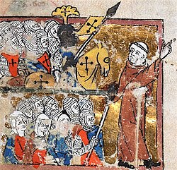
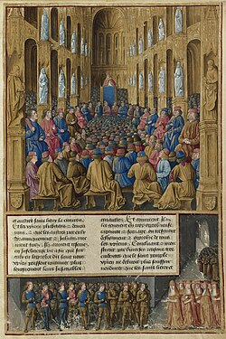
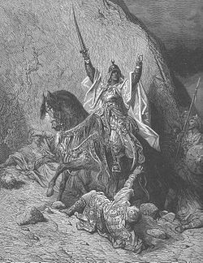
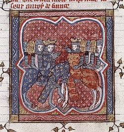
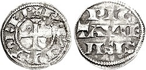
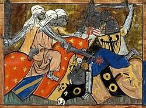
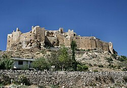

Thousands of commoners, inspired by Peter the Hermit, marched east before the main army — only to be annihilated by the Seljuk Turks in Anatolia.

Peter the Hermit
The charismatic preacher who inspired masses of ordinary people to join the crusade, leading the ill-fated People's Crusade of 1096.

Council of Clermont, 1095
Pope Urban II's call to arms at Clermont launched two centuries of holy war. The crowd's cry of "Deus Vult!" — God Wills It — became the crusading battle cry.

Saladin (Salah ad-Din), 1137–1193
The Kurdish sultan who united the Islamic world, defeated the Crusaders at Hattin, and recaptured Jerusalem — yet was admired for his mercy and chivalry even by his enemies.

Richard & Philip — The Kings' Crusade
Richard I of England and Philip II of France led the Third Crusade. Richard's military genius won battles but strained relations with his allies ultimately doomed the crusade.

Richard I Lionheart, 1157–1199
Effigy of England's warrior-king, who spent most of his reign on crusade. He won major victories over Saladin but never retook Jerusalem, dying of a crossbow wound at Chalus-Chabrol.

Crusader Warfare
A medieval manuscript illustration depicting the brutal combat of the Crusades. Heavily armored knights from Europe clashed with the skilled Muslim cavalry across two centuries of conflict.

Crusader Fortifications
The Crusader states built an extensive network of fortresses across the Holy Land. These castles, many still standing today, were engineering marvels and military necessities for outnumbered garrisons.